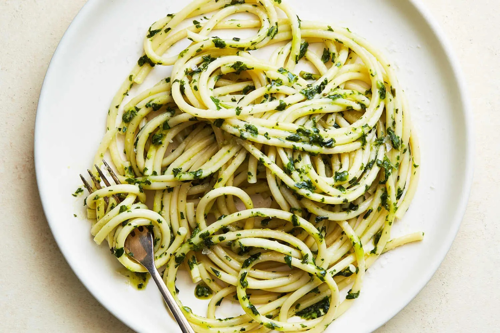

NYTimes Cooking: Basil-Butter Pasta

This pasta captures the essence of basil, without pesto’s garlic, nuts and salty cheese tussling for attention. It smells like a sun-warmed basil plant, one of summer's greatest moments. To make it, simply blanch basil leaves to lock in their color, then blitz them with butter. As the bright-green basil butter melts onto hot pasta, it carries the sweet pepperiness (and the smell, too!) of the herb into every nook and cranny.
Ingredients
- Salt
- 3 cups packed basil leaves (about 80 grams, from 2 large bunches)
- 6 tablespoons unsalted butter, sliced, at room temperature
- 1 pound of any pasta, any type
Steps
- Step 1: Bring a large pot of well-salted water to a boil. Place the basil in a heatproof colander. Once the water is boiling, submerge the colander with the basil into the pot and use a spoon to push the leaves into the water. Blanch for 10 seconds, then immediately rinse the leaves under cold water to stop the cooking. Squeeze them dry with your hands. Reserve the boiling water.
- Step 2: Transfer the basil to a food processor and pulse until finely chopped. Add the butter and process, scraping the sides of the food processor as needed, until very smooth. Refrigerate until ready to use. (Basil butter will keep, refrigerated, for up to 1 week, or in the freezer for several months.)
- Step 3: Add the pasta to the boiling water and cook until tender. Reserve 1 cup of the pasta cooking water, then drain the pasta. Return the pasta and ¼ cup of the reserved pasta water to the pot, then add the basil butter and toss to coat. (Doesn’t it smell incredible?) If the pasta is dry instead of silky and glossy, add more pasta water, 1 tablespoon at a time. Season to taste with salt.